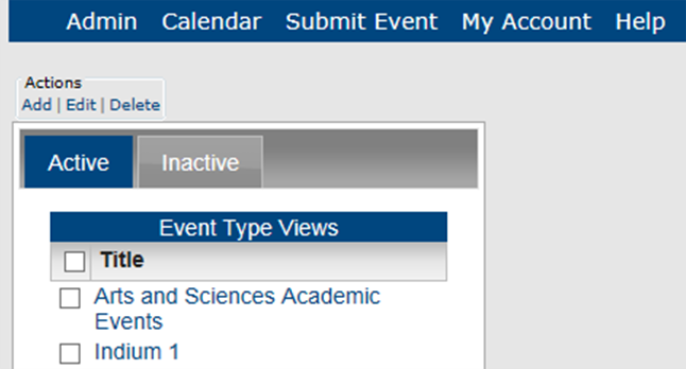
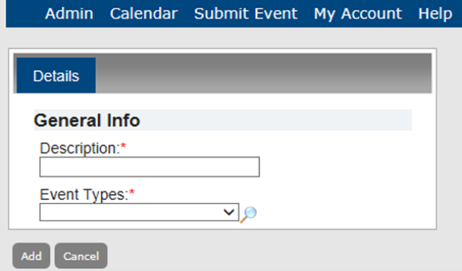
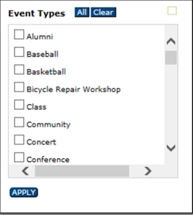
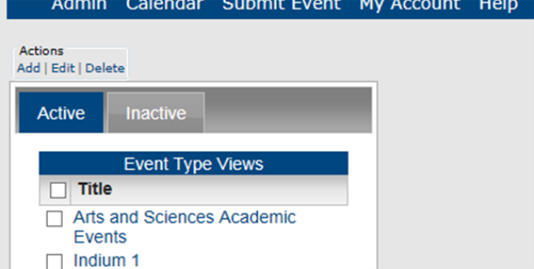
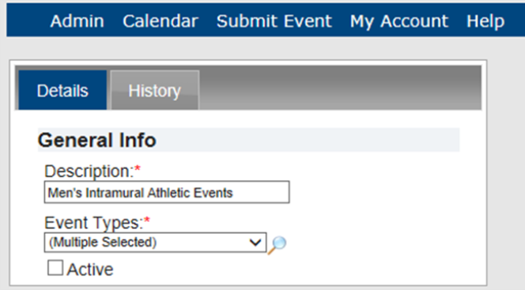

Managing Event Type Views
An Event Type View is a grouping or collection of event types to help your guests or users to search for multiple event types in a single step, rather than conducting multiple searches for different event types. For example, if you are managing calendars for a university campus, you might group the event types of Women’s Swimming, Women’s Track and Field, Women’s Soccer, and Women’s Basketball under the Event Type View of “Women’s Athletic Events.” This topic guides you in creating, editing, deleting and activating and inactivating Event Type Views and viewing Event Type View history..
Creating a New Event Type View
 | Note: You can only add active event types to an Event Type View. You may first need to activate an event type so that you can add it to a view. See Also: Activating an Event Type |
1. On the Admin menu, point to Configuration > Event Type Views. The Event Type Views page opens on the Active tab, listing all active Event Type Views in Master Calendar.

2. Under Actions, click Add. The Adding Event Types page opens on the Details tab.

3. In the Description field, enter a description for the Event Type View.
4. On the Event Types dropdown list, do one of the following:
- Select a single event type.
- Select all event types in a single step by clicking All or click the Lookup icon to open a list of all currently active event types in Master Calendar, and on this list, select multiple event types, and then click Apply. This associates multiple event types with the Event Type View you are creating.

5. Click Add. The Event Type View is added as an active item in Master Calendar.
Working With Existing Event Type Views
1. On the Admin menu, point to Configuration > Event Type Views. The Event Type Views page opens on the Active tab, listing all active Event Type Views in Master Calendar.

2. To edit an Event Type View, select it on the Active or Inactive tab.
- Under Actions, click Edit. The Details tab opens, showing the description for the Event Type View and the event type that was selected for the view.

- To view the history of an Event Type View, click the History tab. The history for an Event Type View consists of the original creation date of the view, the name of the user who created the view, and the last date that the view was edited as well as the name of the user who last edited the view. You can view the history for both active and inactive Event Type Views.
- To change the name of the Event Type View, edit the text in the Description field.
- To change the Event Types associated with the Event Type View, select from items in the Event Types dropdown field.
- To control whether the Event Type View is available for users, use the Active checkbox. This controls whether the item appears in dropdown lists for Event Type View.
- Click Save. The list of Event Type Views on the Active or Inactive tab is updated to reflect your changes.
3. To delete an Event Type View, locate it on the Active or Inactive tab and select select (one or more) Event Type Views to be deleted. To select all Event Type Views on the currently opened page for deletion in a single step, select Title. If you have multiple pages of views to delete, you must repeat this entire process on each page.
- Under Actions, click Delete. A message prompts you to confirm that you want to delete all the selected Event Type Views.
- Click OK. A message confirms the deletion..
- Click OK. The Active tab or Inactive tab is updated to reflect the deletion of the Event Type Views.
Page tags: article:topic